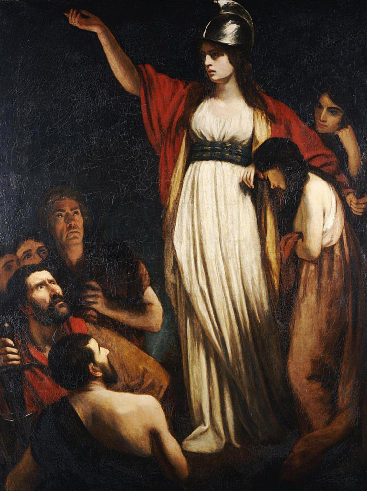
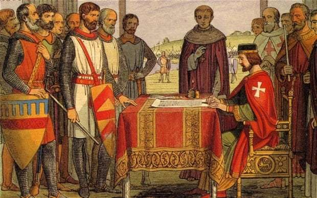
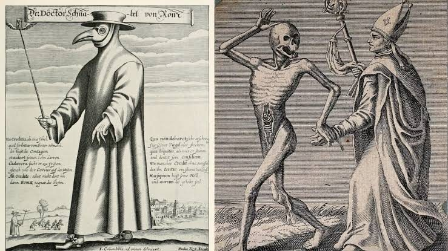
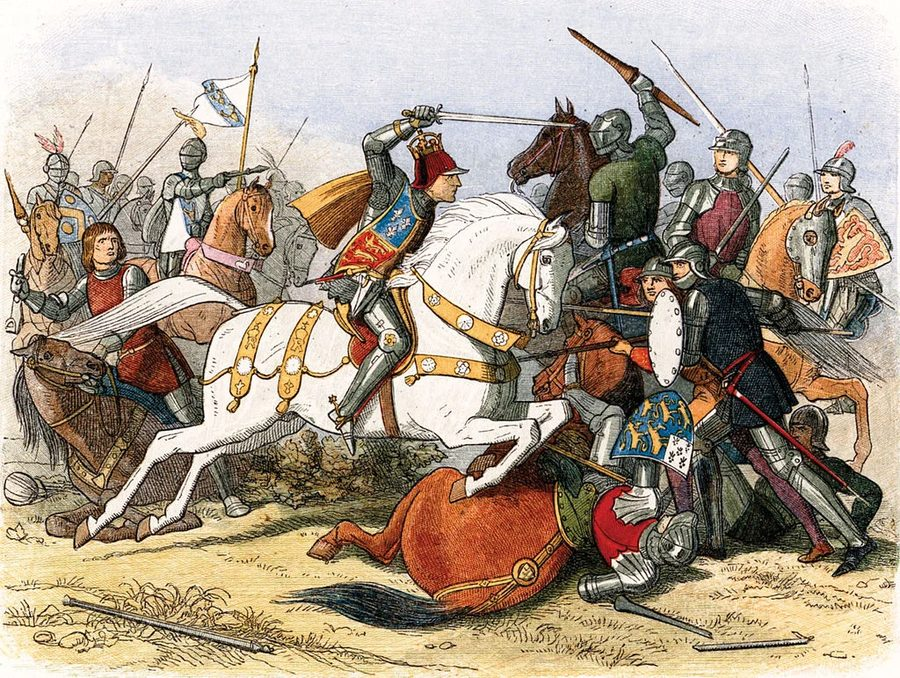
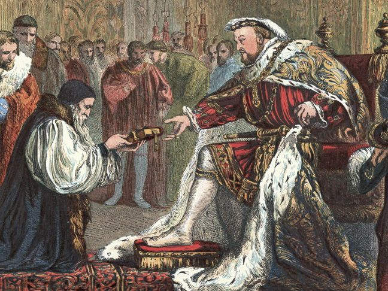
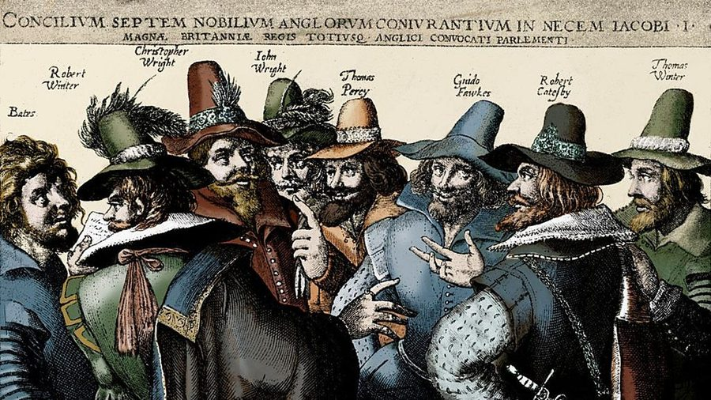
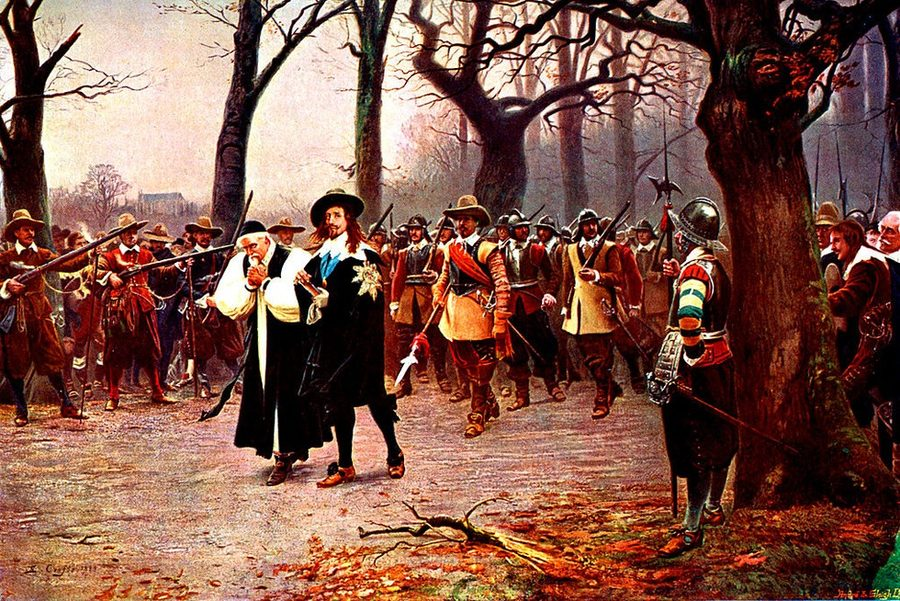

🔊 Where does the stress fall?
Mark the pattern: O stressed, o unstressed. Say each word aloud and name the rule.
· she's famous for her curiOsity
· the DEcrease in prices → prices deCREASED by 10%
· who is responsible for MANagement here?
♻️ In, on, at or for?
All from Lesson 2. Each preposition is used twice.
Book the tickets well advance — the good seats go within hours.
first the film seemed unbearably slow, but the last twenty minutes were extraordinary.
She insisted paying for everyone, although nobody had asked her to.
He has been out of work a while now, so money is tight at home.
fact, the report had been finished two days before the deadline.
My brother is surprisingly good persuading people to change their minds.
The company is famous treating its employees unusually well.
We set off early and still didn't arrive time for the opening speech.
FROM marks the starting point — where something comes out of, and therefore also what it is kept away from or told apart from (suffer from, different from, prevent … from).
WITH marks company or contact — two things side by side: the tool you use, the person you deal with, the feeling you hold towards something (familiar with, satisfied with, agree with).
ABOUT marks the topic — what your words, thoughts or feelings are circling around (worried about, uncertain about, complain about).
- by chance / by accident
- by mistake
- learn sth by heart
- by hand / by car / by email
- written / directed by
- caused / accompanied by
- by far the best
- by no means (C1)
- suffer from
- different from
- prevent sb from doing
- recover from
- benefit from
- borrow sth from sb
- apart from
- stem from (C1)
- familiar with
- satisfied / pleased with
- agree with
- cope with / deal with
- provide sb with sth
- compare sth with sth
- fed up with (C1)
- consistent with (C1)
- worried about
- uncertain about
- excited about
- complain about
- curious about
- serious about
- enthusiastic about (C1)
- sceptical about (C1)
difficult forfamous / known forresponsible forfor the first timeapologise forwait forfor a while
🧩 All eight prepositions.
in · on · at · for · by · from · with · about. The verb or adjective before the gap decides it — look left before you write.
He only found out chance, when a colleague mentioned it in passing.
My conclusions differ hers in one important respect.
She isn't particularly familiar the new software yet, so be patient with her.
I'm getting seriously worried how little he has been sleeping.
The scholarship prevented her having to take a second job.
He has never once apologised what he said that evening.
We had to learn the whole speech heart, which took most of the weekend.
general, the second novel is considered the stronger of the two.
Everyone was surprised how quickly the hall emptied after the announcement.
Whether the trip happens at all depends entirely tomorrow's forecast.
🎤 Two minutes, five prepositional phrases.
Speak for two minutes without stopping. Use at least five phrases from the bank — tap each one as you use it.
Something you are good at that most people find difficult.
How did you get into it — on purpose, or completely by chance? Were you any good at it at first?
What part of it are beginners usually most uncertain about, and why is that part so difficult for them?
Who or what has influenced you most — and are you satisfied with how far you've got?
Phrase bank — tap what you manage to use:
Used: 0 / 5 needed
🔗 Match the two halves.
Click a half on the left, then its partner on the right.
🛠 Three questions that name any conditional.
Take the fact you want to rewrite and ask them in this order. Fill the gaps; click where there are buttons.
It's raining right now →
She missed the bus yesterday →
I'm seeing him tomorrow →
Nobody knows yet how it will turn out, so you are talking about a genuine option.
→ Real. Don't touch the tenses.
Maybe it will snow. → If it snows, we'll go sledging.
You are not predicting anything. You know what is (or was) the case and you are imagining the opposite of it.
→ Unreal. Move the verb one step back.
It never snows here. → If it snowed here, we would go sledging.
| What really happened | The conditional you build on it |
|---|---|
| + She revised, so she passed. | − If she hadn't revised, she wouldn't have passed. |
| − He didn't apologise, so she's still angry. | + If he had apologised, she wouldn't still be angry. |
- future + real → the conditional
- present + unreal → the conditional
- past + unreal → the conditional
- past cause + present result → a conditional
The forms.
| Type | If-clause | Main clause |
|---|---|---|
| Zeroalways true | if + | |
| Firstfuture · real | if + | + infinitive |
| Secondpresent · unreal | if + | would + |
| Thirdpast · unreal | if + | would + past participle |
| Mixedpast cause · present result | if + | would + (the result is now) |
✍️ Rewrite each fact as a conditional.
Run the three questions, and flip positive and negative. The last three are mixed.
I don't have her number, so I can't call her.
Model answer
It's raining, so we're staying in this evening.
Model answer
She didn't set an alarm, so she missed the bus.
Model answer
He ate three portions of ice cream, so he felt sick all evening.
Model answer
We didn't book in advance, so we didn't get tickets for the concert.
Model answer
I didn't revise the vocabulary, so I don't know these words now.mixed
Model answer
She moved to Spain five years ago, so she speaks Spanish fluently.mixed
Model answer
They didn't take the earlier train, so they're still stuck at the station.mixed
Model answer
🧷 unless · as long as · provided/providing (that) · in case
Four linkers that do the work of if — none of them the same. Work out what each means, then choose between them.
You won't pass the driving test unless you practise parking a lot more.
Take a spare battery in case your phone dies during the trip.
Provided/Providing (that) you finish your homework first, you can play for an hour.
As long as you keep your voice down, you can stay in the library.
We'll have a picnic it's sunny.
I wouldn't go to her party she invited me.
My mum will work overtime they pay her.
You can't come in you have an invitation.
Take some sweets you start coughing.
You can go out with your friends you come back before 11 pm.
I'll make you a sandwich now you feel hungry later.
I don't care about money I'm fit and healthy.
🔗 Conditional transformations.
Complete the second sentence so that it has a similar meaning to the first, using the word given. Do not change the word given. Use between two and five words.
| 1 | It's obvious that you won't get better unless you take your medicine. if It's obvious that your medicine, you won't get better. |
| 2 | I'll help you, but only if you listen carefully to me. long I'll help you carefully to me. |
| 3 | If you don't enjoy hospital dramas, don't watch it. unless Don't watch it hospital dramas. |
| 4 | Don't speak in a loud voice and you can stay with the patient. provided You can stay with the patient quietly. |
| 5 | I want to become a doctor but my marks aren't good enough. if I'd become a doctor enough. |
| 6 | I'll take an extra pen because this one might run out. case I'll take an extra pen out. |
| 7 | I won't miss class providing I feel better tomorrow. as I'll come I feel better tomorrow. |
| 8 | Personally, I think you should complain. would I you. |
🔁 Key word transformations.
✱ Not conditionals — extra practice if there's time.
Complete the second sentence so that it has a similar meaning to the first, using the word given. Do not change the word given. Use from two to five words.
| 1 | She often went abroad on holiday before she had a baby. would She abroad on holiday before she had a baby. |
| 2 | I can't wait to see your new car. forward I'm really your new car. |
| 3 | It's impossible for me not to laugh when he starts cracking jokes. help I can't when he starts cracking jokes. |
| 4 | I really don't want to work as a cleaner. feel I really don't as a cleaner. |
| 5 | This football match will probably attract a lot of people. likely This football match a lot of people. |
| 6 | It was the picture that interested me most at the exhibition. found I interesting part of the exhibition. |
| 7 | I very rarely go to the cinema at weekends. hardly I the cinema at weekends. |
| 8 | After I graduate, I'd like to become a teacher. ambition It a teacher after I graduate. |
🇬🇧 Match the picture to the event.
Click a picture, then its event below. A correct pair locks in green.











✏️ Which preposition is missing?
Complete each sentence with one preposition. All twelve phrases are from this lesson.
My grandmother still knows dozens of poems heart, although she learned them sixty years ago.
first I found the course too demanding, but by October I had caught up with the others.
The delay was caused a signal failure just outside the station.
Teenagers' sleep patterns differ those of adults, which is why early lessons feel so hard.
I'm sure she broke the vase purpose — she had been arguing with her brother all morning.
Apart the ending, which felt a bit rushed, the novel was very well written.
The manager wasn't satisfied the results and asked the whole team to start again.
I'll be back a while — keep an eye on the soup and don't let it boil over.
He's remarkably good remembering faces, but hopeless with names.
The town is famous its cheese, which is sold all over the country.
The guests have been complaining the noise from the building site next door.
My parents are worried how much time I spend online.
🔁 Replace the underlined words
Swap the underlined part for a phrase from the box so the meaning stays the same. Type the phrase in the gap — you may need to change the verb form or the word order slightly. Each phrase is used once.